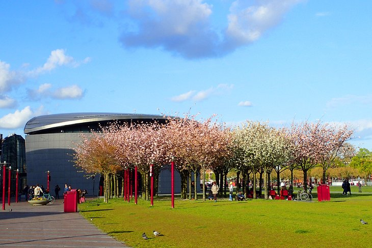
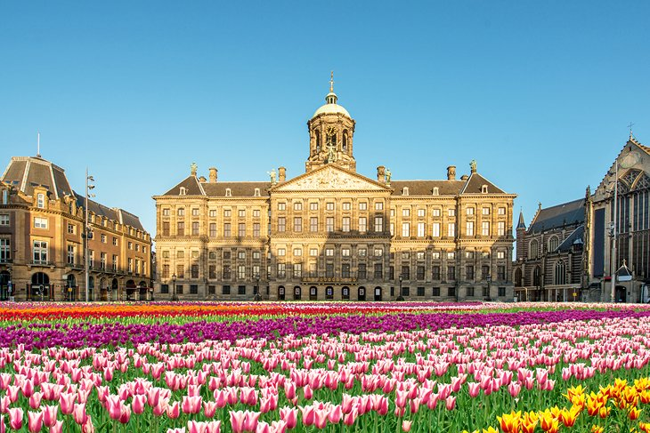
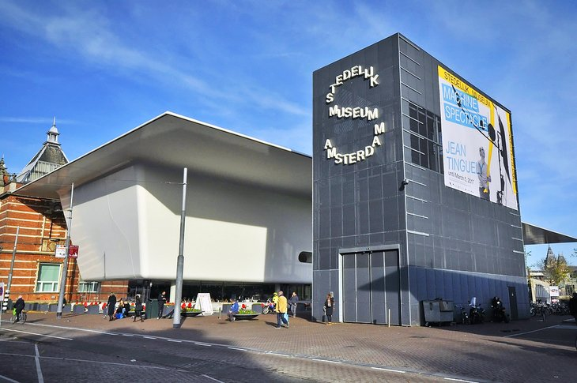

Country of Amsterdam

The Van Gogh Museum
A must-visit for art fans and historians, the spectacular Van Gogh Museum has been one of Amsterdam's top attractions since it opened in 1972. Dedicated to the often troubled life and extraordinary artistry of one of the country's most-revered painters, this modern Gerrit Rietveld-designed structure is home to the world's largest collection of Van Gogh paintings and artifacts, much of it donated by his brother, Theo, and other family members.
Boasting an impressive 200 paintings, 500 etchings and drawings, as well as 700 letters written to (and by) friends and family, the collection is split into key periods of the artist's life: his realistic works (1880 to 1887), including the famous The Potato Eaters, and his Impressionist period from 1887 to 1890, which saw the creation of perhaps his best-known work, Vase with Sunflowers.
A highlight of a visit is the amazing "Meet Vincent Van Gogh Experience," a fascinating multimedia presentation of the painter's life and times through vivid digital reproductions of his work.
Also of interest are works by Van Gogh's contemporaries, including such leading artists as Paul Gauguin and Henri de Toulouse-Lautrec. If time allows, be sure to check the availability of the museum's educational workshops in such disciplines as painting and photography. A café, shop, and library are also located on-site.

Royal Palace of Amsterdam
Formerly the Town Hall, the Royal Palace of Amsterdam (Koninklijk Paleis van Amsterdam) serves as the King's residence when he's in the city. Its construction was a monumental task when started in 1648 and required the sinking of 13,659 piles to support the mammoth structure.
Based upon the architecture of ancient Rome, the exterior is strictly classical, while the interior is magnificently furnished, its apartments decorated with a wealth of reliefs, ornamentation, marble sculptures, and friezes. Check out the spectacular ceiling paintings by Ferdinand Bol and Govert Flinck, pupils of Rembrandt.
Other highlights include one of the finest furniture collections in the world, and the City Treasurer's room with its marble fireplace and ceiling paintings by Cornelis Holsteyn. You'll also see the Hall of the Aldermen, also containing paintings by Bol and Flinck.
The largest and most important room is the Council Hall, sumptuously decorated and one of the most beautiful staterooms in Europe. English language guided tours are available, and useful audioguides are included with admission.

Dutch Art at Stedelijk Museum Amsterdam
Founded in 1895, the Stedelijk Museum Amsterdam — in English, the Municipal Museum Amsterdam — houses one of Europe's most impressive modern art collections. With a focus on 19th- and 20th-century Dutch and French painting, the museum features works by a number of renowned art movements, including De Stijl.
Other important works include examples from Van Doesburg, Mondrian, and Rietveld; Pop Art, with works by Rosenquist and Warhol; and painters such as Chagall, Dubuffet, De Kooning, and Matisse. The sculpture garden also contains examples by Rodin, Moore, Renoir, and Visser.
English language guided tours are available, as are fun family workshops. A shop and restaurant are also located on-site.